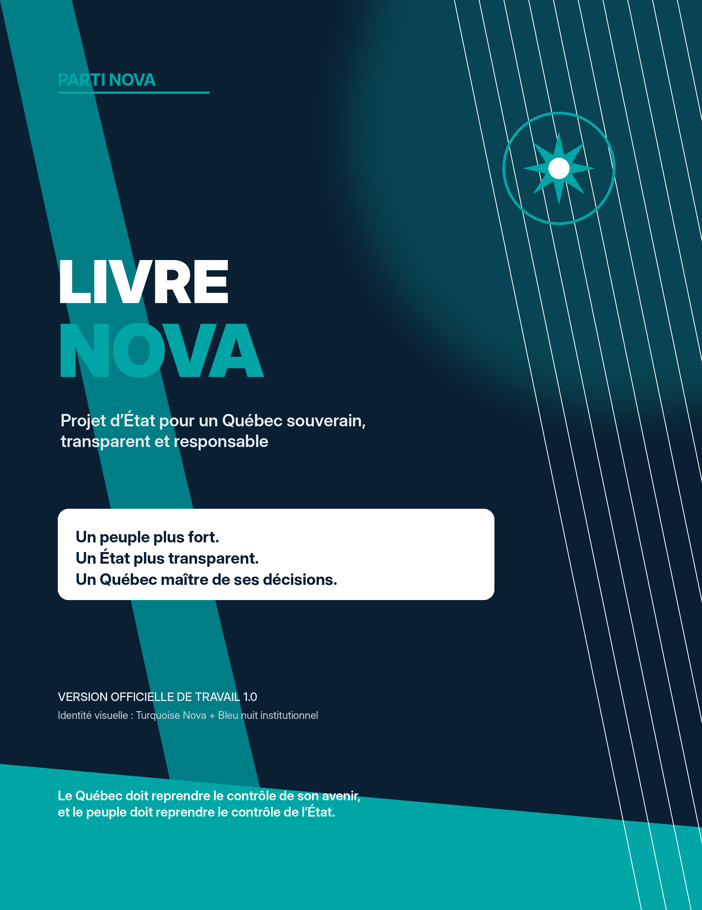

Livre NovaPDF
Livre Nova — version courte
Version courte du Livre Nova pour comprendre la vision générale sans entrer dans toute la version complète.
03livreversion courtevision
La section centrale pour lire la version courte puis la version complète du Livre Nova.

La version courte présente l’essentiel. La version complète sert de référence publique plus détaillée.
Version courte du Livre Nova pour comprendre la vision générale sans entrer dans toute la version complète.
Version complète du Livre Nova. Document central pour approfondir la vision, les principes et l’orientation publique.